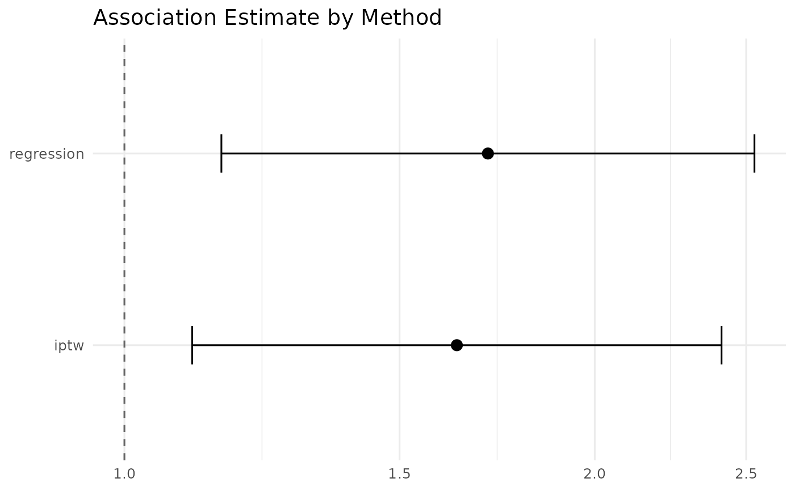

Forest Plot of Method Comparison Results
plot_comparison.RdForest Plot of Method Comparison Results
Arguments
- comparison
A data.frame from
run_pipeline()'s$comparisonelement (columnsmethod,estimate,conf_low,conf_high, ...).- log_scale
Logical;
TRUE(default) plots on the log scale with a reference line at 1 (binary outcomes, estimates are ORs).FALSEplots on the linear scale with a reference line at 0.
Value
A ggplot object, returned visibly (it does not print itself).
Calling it bare at the console or in an R Markdown chunk renders the plot
once.
Examples
data(example_cohort)
res <- run_pipeline(
data = example_cohort,
exposure = "exposure",
covariates = c("age", "diabetes", "hypertension", "bmi"),
outcome = "outcome_binary",
type = "binary",
methods = c("regression", "iptw")
)
#> Step 1/9: Building propensity score model...
#> Positivity: PS window [0.010, 0.990]; control [0.366, 0.906], treated [0.364, 0.878]; 0 outside window -> OK
#> Step 2/9: Matching cohorts...
#> Warning: Fewer control units than treated units; not all treated units will get
#> a match.
#> Step 3/9: Checking balance...
#> Step 4/9: Generating unmatched descriptive table...
#> Step 5/9: Generating matched descriptive table...
#> Step 6/9: Fitting all outcome models (3 types)...
#> Step 7/9: Running paired statistical tests...
#> Step 8/9: Generating balance table...
#> Step 9/9: Running requested confounding-adjustment methods...
#> IPTW weights (ATE): min 0.53, median 0.97, max 3.56, max/min ratio 6.8
#> Pipeline complete.
plot_comparison(res$comparison, log_scale = TRUE)
